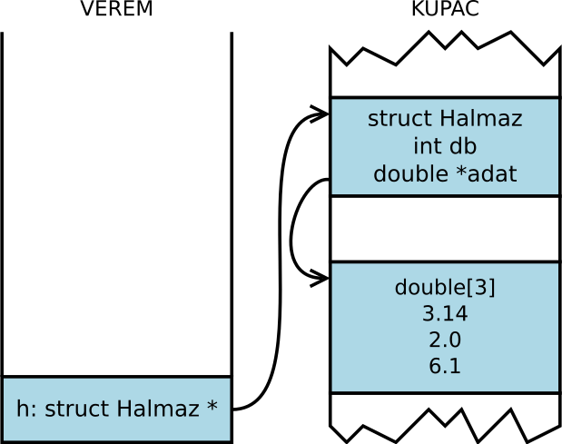

Gyakorlat, 9. hét: dinamikus tömbök
Czirkos Zoltán · 2015.02.18 · Frissítve: 2015.02.15
Dinamikus memóriakezelés. Dinamikusan foglalt tömbök. Halmaz típus és függvényei.
Dinamikus memóriakezelés. Halmaz típus létrehozása dinamikus tömbbel.
Felkészülés a gyakorlatra:
- Az dinamikus memóriakezelésről szóló előadás anyagának megértése.
- A pointerekről és cím szerinti paraméterátadásról szóló gyakorlat átismétlése.
1Dinamikus tömb
Írjunk programot, amelyik bekéri, egy eltárolandó sokszögnek hány csúcsa van; utána pedig tárolja el a begépelt csúcsok koordinátáit!
Megoldás
#include <stdio.h>
#include <stdlib.h>
int main(void) {
int n, i;
typedef struct Pont {
double x, y;
} Pont;
Pont *poligon;
printf("n="); scanf("%d", &n);
poligon=(Pont*) malloc(n*sizeof(Pont));
if (poligon==NULL) {
printf("Memoriafoglalasi hiba.\n");
return 1;
}
for (i=0; i<n; i++) {
printf("%d. x=", i+1); scanf("%lf", &poligon[i].x);
printf("%d. y=", i+1); scanf("%lf", &poligon[i].y);
}
/* itt csinálhatnánk valami hasznosat a tömbbel. például
ha a sokszög konvex, akkor a súlypontját (belső pont)
véve háromszögekre bonthatjuk azt, és kiszámolhatjuk
a területét. */
free(poligon);
return 0;
}
Egy Pont struktúra méretét a sizeof(Pont) kifejezés adja meg. Ezt a
fordító kiszámolja, nem nekünk kell vele foglalkozni. Mivel a tömb elemei pedig közvetlenül
egymás után vannak, ezt a mérettel szorozva kapjuk a tömb méretét bájtokban.
2Dinamikus tömbbel visszatérő függvény
Írjunk feladatot, amelyik egy paraméterben kapott double tömbből kiválogatja az átlagnál kisebb elemeket, és egy újonnan lefoglalt dinamikus tömbbe rakja azokat! Az új tömb címével és méretével térjen vissza cím szerint átadott paraméterben! A visszatérési érték legyen IGAZ, ha sikerült a művelet, és HAMIS, ha nem.
Megoldás
A gondolatmenet: double tömböt kell foglalnunk, és abba az elsőből válogatnunk. De mekkorát? Azt a foglalás előtt még meg kell számolni! Vagyis:
- átlag számítása,
- keresett elemek számlálása (mert most már tudjuk az átlagot),
- foglalás (mert most már tudjuk a méretet),
- keresett elemek másolása (mert most már van hova másolni).
int valogat(double *eredeti, int meret, double **ujtomb, int *ujmeret) {
double *uj;
double sum, atlag;
int db, i, ide;
sum=0;
for (i=0; i<meret; i++)
sum+=eredeti[i];
atlag=sum/i; /* megvan az atlag. */
db=0;
for (i=0; i<meret; i++)
if (eredeti[i]<atlag)
db++;
/* megvan a darab. */
uj=(double *) malloc(sizeof(double)*db);
if (uj==NULL)
return 0;
/* megvan a tomb. */
ide=0;
for (i=0; i<meret; i++)
if (eredeti[i]<atlag) { /* megint! */
uj[ide]=eredeti[i];
ide++;
}
/* kesz az uj tomb. */
/* visszateresek: */
*ujtomb=uj;
*ujmeret=db;
return 1;
}
Nincs itt semmi újdonság: a tömböt pointerével és méretével vesszük át, az új tömböt pointerével és méretével adjuk vissza.
3Halmaz adatstruktúra
Írjunk egy programot, amelyik egy „double”-ökből álló halmaz típust hoz létre. A halmaz a következőket kell tudja (ezek a megírandó függvények):
- Be lehessen tenni egy elemet a halmazba. (Ha már benne van, nem történik semmi.)
- Ki lehessen venni egy elemet a halmazból.
- Le lehessen kérdezni, egy elem benne van-e a halmazban.
A halmazban lévő elemek száma lehessen tetszőlegesen nagy!
Megoldás
Az utóbbi kitétel miatt dinamikus memóriát használunk. A halmaz elemeit egy dinamikus tömbben jegyezzük meg; mivel a lefoglalt memóriaterületre csak egy pointerünk van, ezért magunknak kell az éppen aktuális méretet (az elemszámot) nyilvántartani. Egy adott halmazhoz egy konkrét elemszám tartozik; a két elválaszthatatlan adat természetesen egy struktúrába kerül:
typedef struct Halmaz {
int db;
double *adat;
} Halmaz;
Ha létrehozunk egy halmaz struktúrát, akkor az memóriaszemetet fog tartalmazni, mind a db,
mind az adat mezőben. Ezért egy halmazt az első használat előtt inicializálni kell.
Hogy ne szivárogjon a memória, az utolsó használat után a dinamikusan foglalt területet fel is kell
szabadítani. Ezért a fenti három függvényen kívül még kettőt írunk, amelyeknek a feladatai ezek lesznek.
A függvények, amelyek valamely halmazon dolgoznak, megváltoztathatják a struktúra tartalmát. Pl. a
memóriaterület más helyre kerülhet, vagy a darabszám nőhet. Ezért a függvényeknek nem a struktúrát,
vagyis annak másolatát, hanem a struktúrára mutató pointert kell átvegyenek. A betesz
és kivesz függvényeknél ez mindenképpen így van, de a kényelem kedvéért érdemes az
összeset így megírni. Akkor nem kell majd fejben tartani, melyik függvény vár halmazt, és melyik
halmazra mutató pointert. Azok a függvények, amelyek pedig nem változtatják meg a struktúrát (pl. egy
halmaz nem változik meg azáltal, hogy ellenőrizzük, tartalmaz-e egy elemet), a halmazra mutató
pointert konstans pointerként veszik át. Így a fordító ellenőrizni tudja, nem írtunk-e azokba
véletlenül olyan kódot, amely megváltoztatná azt.
A halmazba új számot betenni és számot abból kivenni sajnos költséges művelet. A dinamikusan foglalt
tömböt átméretezni nem lehet, mivel lehet hogy előtte, utána másra használt, foglalt memória van.
Ezért átméretezés esetén új memóriaterületet kell foglalni, és az elemeket átmásolni. A másolás után
pedig a régi memóriaterület felszabadítható, végül pedig a halmaz struktúrában található pointer
az új területre állítható át. (A szabványos realloc() függvény egyébként ugyanezt csinálja.)
#include <stdio.h>
#include <stdlib.h>
typedef struct Halmaz {
int db;
double *adat;
} Halmaz;
/* inicializalatlan strukturat hoz alapallapotba */
void halmaz_init(Halmaz *h) {
h->db=0;
h->adat=NULL;
}
/* halmazt felszabadit az utolso hasznalat utan */
void halmaz_felszabadit(Halmaz *h) {
free(h->adat);
}
/* igazzal ter vissza, ha benne van az adott elem */
int halmaz_benne_van_e(Halmaz const *h, double mi) {
int i;
for (i=0; i<h->db; ++i)
if (h->adat[i]==mi)
return 1; /* ha valahol megtalaljuk, igaz */
return 0; /* ha sehol nem talaltuk, hamis */
}
void halmaz_betesz(Halmaz *h, double mit) {
double *uj;
int i;
/* ha mar benne van, nem kell semmit csinalni */
if (halmaz_benne_van_e(h, mit))
return;
/* atmasoljuk a regi adatokat eggyel nagyobb helyre */
uj=(double*) malloc((h->db+1)*sizeof(double));
for (i=0; i<h->db; ++i)
uj[i]=h->adat[i];
uj[h->db]=mit; /* vegere az uj */
free(h->adat); /* a regi mar nem kell */
h->adat=uj; /* atallitjuk a pointert az ujra */
h->db++; /* eggyel nott a darabszam */
}
void halmaz_kivesz(Halmaz *h, double mit) {
double *uj;
int i, j;
/* ha nincs benne, nincs dolgunk */
if (!halmaz_benne_van_e(h, mit))
return;
/* uj memoriaterulet, eggyel kisebb */
uj=(double*) malloc((h->db-1)*sizeof(double));
j=0;
for (i=0; i<h->db; ++i)
if (h->adat[i]!=mit)
uj[j++]=h->adat[i];
free(h->adat);
h->adat=uj;
h->db--; /* eggyel csokken a darabszam */
}
/* kilistazza egy halmaz tartalmat */
void halmaz_lista(Halmaz const *h) {
int i;
for (i=0; i<h->db; ++i)
printf("%g ", h->adat[i]);
printf("\n");
}
int main(void) {
Halmaz h;
halmaz_init(&h);
halmaz_betesz(&h, 3.14);
halmaz_betesz(&h, 2.0);
halmaz_betesz(&h, 3.14);
halmaz_lista(&h);
halmaz_betesz(&h, 6.1);
halmaz_lista(&h);
halmaz_kivesz(&h, 3.14);
halmaz_lista(&h);
halmaz_felszabadit(&h);
return 0;
}
A fenti megoldásban kihasználjuk, hogy free(NULL) a szabvány
szerint elfogadott. Azonban egyes régebbi fordítók esetén ebből gond lehet.
Ilyenkor a if (ptr!=NULL) free(ptr); formát érdemes használni.
Miután a main() függvény a 6.1-es számot betette a halmazba,
így néz ki a program memóriaképe:
A veremben a h struktúra van, amely az egész számot és a pointert
tartalmazza; a pointer pedig a dinamikusan foglalható területre mutat, oda, ahol
a malloc() hívás helyet talált a három double méretű
memóriaterületnek.
4Halmaz dinamikusan foglalt struktúrával
Írjuk át a programot úgy, hogy a halmazt létrehozó függvények ne egy meglévő, inicializálatlan halmaz struktúrán dolgozzanak, hanem azt is dinamikusan foglalják, és a címével térjenek vissza. Erősen különböztessük meg az új halmazt létrehozó és a meglévő halmazt módosító függvényeket! Az előbbiek visszatérnek egy pointerrel, az utóbbiak várnak egy pointert a módosítandó halmazra. A függvények használata legyen ilyen:
Halmaz *h; h=halmaz_uj(); halmaz_betesz(h, 3.14); halmaz_betesz(h, 6.1); halmaz_lista(h); halmaz_kivesz(h, 3.14); halmaz_lista(h); halmaz_felszabadit(h);
Így a halmazokat kényelmesen adogathatjuk át a függvények között, nem szűnnek
meg amiatt, mert lokális változók lennének. Figyeljük meg, hogy ez a
szintaktikára nézve is jótékony hatással van: mivel h itt eleve már
pointer, sehol nem kell az & címképző operátort használni.
Megoldás
Ilyenkor a memóriaképünk ilyen:
A main()-ben lokális változó csak egy pointer; a kupacon van a struktúra és a tömb is.
A különbség csak a létrehozó és a felszabadító függvényekben van. A létrehozáskor
malloc()-oljuk a struktúrát is, és emiatt természetesen a felszabadításnál
free()-zni kell azt is:
Halmaz *halmaz_init() {
Halmaz *ph;
ph = (Halmaz*) malloc(sizeof(Halmaz));
ph->adat = NULL;
ph->db = 0;
return ph;
}
void halmaz_felszab(Halmaz *ph) {
free(ph->adat);
free(ph);
}
5Halmaz továbbfejlesztés
Írjunk meg egy további létrehozó és másoló függvényt:
- Halmaz létrehozása egy másik halmaz másolataként (legyen az utóbbitól független, ún. mély másolat!),
- Halmaz másolása egy már inicializált másik halmazba (az addig abban tárolt értékek eldobásával).
Írjuk meg a következőket is:
- Két halmaz metszete (új halmazként),
- Két halmaz uniója (ugyanígy),
- Két halmaz kivonása.
Ezekhez érdemes a halmazt rendezve tartani (sőt eleve rendezve építeni),
hiszen akkor könnyebb hatékonyan megvalósítani a műveleteket (nem kell folyton keresgélni).
A rendezve tartáshoz a betesz() és kivesz() függvényeket
is módosítani kell, hiszen azoknak figyelnie kell a rendezettség megtartására.
Ha a halmaz belül rendezett, akkor pedig a benne_van_e()
függvényt átírni bináris keresésre.